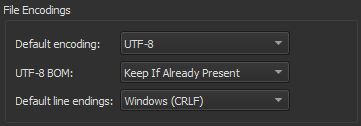

Change text encoding

To show the file encoding of the current file on the editor toolbar (4) in the Edit mode, go to Preferences > Text Editor > Display > Display file encoding.

To change the text encoding, select it on the toolbar, and then select new encoding in the Text Encoding dialog:

To reload the file with the selected encoding, select Reload with Encoding.
To save the file with the new encoding, go to Save with Encoding.
Set default encoding
To define the default file encoding, select Preferences > Text Editor > Behavior, and then select a suitable option in Default encoding.

Qt 5 and Qt 6 require UTF-8 encoded source files, and therefore the default encoding is set to UTF-8. Detecting the correct encoding is tricky, so Qt Creator will not try to do so. Instead, it displays the following error message when you try to edit a file that is not UTF-8 encoded: Error: Could not decode "filename" with "UTF-8"-encoding. Editing not possible.
To resolve the issue, use a file conversion tool to convert the file encoding to UTF-8 when developing Qt 5 applications. Otherwise, conversion of string constants to QString might not work as expected.
If you develop only Qt 4 applications or other than Qt applications, you can set other encoding options as the default encoding. Select the System option to use the file encoding used by your system.
See also How To: Edit Code, Edit Mode, and Behavior.